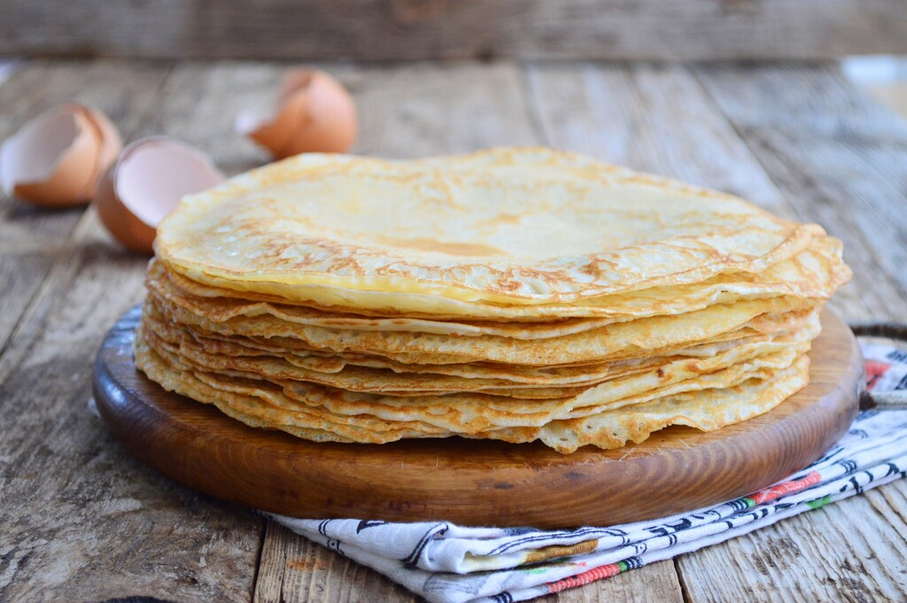

dutch pancake Recipe
Ingredients:
- 2 cups all-purpose flour
- 2 cups milk
- 3 large eggs
- 1/4 teaspoon salt
- 2 tablespoons granulated sugar
- 2 tablespoons unsalted butter, melted
- Optional toppings: powdered sugar, maple syrup, fresh fruits, Nutella, or any other desired toppings

How to make dutch pancakes
-
In a large mixing bowl, whisk together the flour, salt, and sugar until well combined.
-
Make a well in the center of the dry ingredients and crack the eggs into the well.
-
Gradually pour in the milk while whisking the mixture. Continue whisking until you have a smooth, lump-free batter.
-
Add the melted butter to the batter and whisk it in thoroughly.
-
Let the batter rest for about 15-20 minutes. This allows the flour to hydrate and results in lighter pancakes.
-
While the batter is resting, preheat a large non-stick skillet or a pancake pan over medium heat. You can also use a regular skillet or a griddle, but make sure to grease it with a small amount of butter or cooking spray.
-
Once the skillet is heated, ladle a small amount of batter onto the pan. The amount of batter will depend on the desired size of your pancakes, but generally, about 1/4 to 1/2 cup of batter per pancake is a good guideline.
-
Tilt the pan in a circular motion to spread the batter evenly and create a thin pancake.
-
Cook the pancake for about 2-3 minutes, or until the edges start to turn golden brown and small bubbles appear on the surface.
-
Carefully flip the pancake using a spatula and cook the other side for another 1-2 minutes, or until it's golden brown.
-
Remove the cooked pancake from the pan and keep it warm on a plate covered with aluminum foil. You can also place the plate in a preheated oven set to low heat (around 200°F or 95°C) to keep the pancakes warm while you cook the rest.
-
Repeat the process with the remaining batter until you've made all the pancakes.
-
Serve the Dutch pancakes warm with your favorite toppings. Popular options include powdered sugar, maple syrup, fresh fruits, Nutella, or a combination of these.
enjoy!